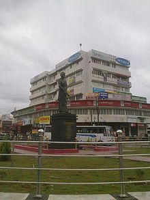

Thrissur Pooram (തൃശ്ശൂര് പൂരം) was the brainchild of Rama Varma Kunhjippilla Thampuran,
or Rama Varma IX, famously known as Sakthan Thampuran, the Maharaja of Cochin (1790–1805)
Before the start of Thrissur Pooram, the largest temple festival in Kerala
was the one-day festival held at Aarattupuzha known as Arattupuzha Pooram. Temples in and around
the city of Thrissur were regular participants. In the year 1798 because of incessant rains, the
temples with from Thrissur were late for the Arattupuzha Pooram and were denied access to the
Pooram procession. Feeling embarrassed and angered by the denial, the temple
authorities raised the issue with Sakthan Thampuran.

Shakthan Thampuran statue in Sakthan Thampuran Nagar in Thrissur city
This made him take the decision to unify the 10 temples situated around Vadakkunnathan Temple
and organized the celebration of Thrissur Pooram as a mass festival. He invited temples with
their deities to the city of Thrissur to pay obeisance to Lord Vadakkunnathan (Lord Siva),
the presiding deity of the Vadakkunnathan Temple. Something unique about this festival is that
everything used in the festival is made fresh every year from scratch. There are people who
are given the duty to craft the umbrellas and the.
Aratupuzha Pooram was very famous in Kerala during the time of Shaktan Tampuran. On that day,
Aratupuzha Pooram was attended by processions from temples in many countries. It is believed that
all the deities of the world come to participate in Aratupuzha Pooram . Paramekkau , Tiruvambadi
and Chembookkau due to strong winds and torrential rains during the 1796 Puram., Karamuk, Lalur,
Ayanthol, Churakattukav, Neithalakav and Kanimangalam temples could not reach Aratupuzha. It is
said that these groups were ordered to perish for not attending the Pooram. At that time it was the
rule of a strong lord. Enraged by the incident, Tampuran started the Thrissur Pooram on the next
pooram day (May 1796 - 971 Medam) with Vadakkumnathan as his base.The main participants
in the pooram were the main temples of the city, Paramekkav Bhagavathy Temple and Tiruvambadi
Sri Krishnaswamy Temple.